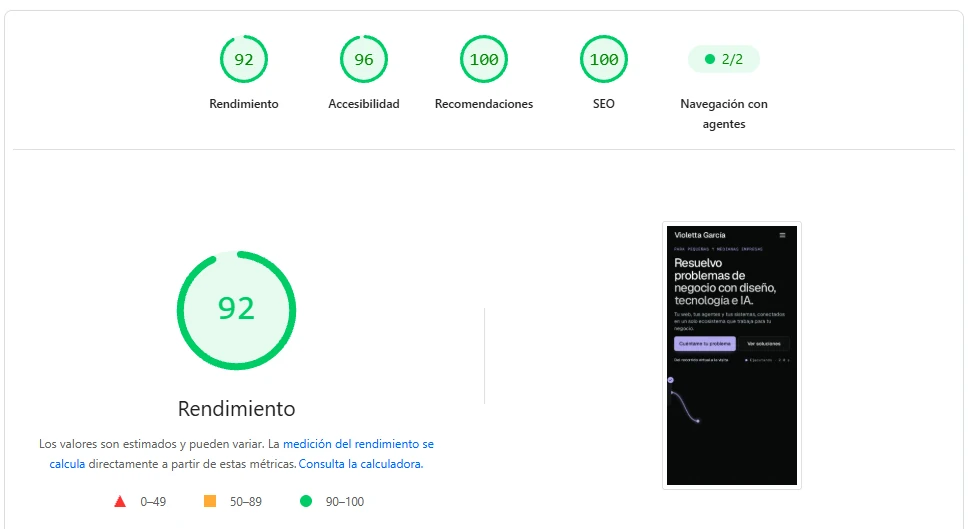

¿Qué tan rápido abre tu web en un celular?
Google califica tu página del 0 al 100. Qué significan esos números, por qué te pueden costar clientes y cómo pasé mi propia web de 47 a 92.

Alguien ve tu anuncio, toca el enlace y se queda viendo una pantalla en blanco. Pasan cinco segundos, luego diez. A esa persona no le importa si tu web es bonita: ya regresó a Instagram o abrió la de tu competencia.
PageSpeed Insights es una herramienta gratuita de Google que mide justo eso: qué tan rápido abre tu página y qué tan bien está hecha. Te da cuatro calificaciones del 0 al 100.
Qué mide PageSpeed
| Calificación | Qué revisa | La pregunta de fondo |
|---|---|---|
| Rendimiento | Qué tan rápido aparece y responde tu página | ¿Tu cliente espera o ya está viendo? |
| Accesibilidad | Contraste, textos de las imágenes y orden de los títulos | ¿La puede usar alguien que ve poco o usa un lector de pantalla? |
| Recomendaciones | Seguridad y buenas prácticas | ¿Está bien construida? |
| SEO | Lo básico para que Google la entienda | ¿Google sabe de qué trata? |
Verde va de 90 a 100, naranja de 50 a 89 y rojo de 0 a 49. La más difícil de subir es Rendimiento, y es la que más se nota en tus ventas.
La prueba de celular simula un teléfono de gama media con una conexión 4G lenta. Es a propósito: así ve tu web mucha gente que la abre en la calle, con datos y no con wifi.
Por qué una web lenta te cuesta clientes
Según un estudio de Google, cuando una página en celular pasa de tardar 1 a 3 segundos, la probabilidad de que la persona se vaya sube 32 %. Si tarda 5 segundos, sube 90 %.
Además, Google toma en cuenta la experiencia en la página, incluida la velocidad, al ordenar sus resultados. No es lo que más pesa, porque el contenido importa más. Pero entre dos páginas parecidas, la rápida tiene ventaja.
Y hay un costo que casi nadie ve: si pagas anuncios, pagas cada clic, aunque la persona se vaya antes de que tu página termine de abrir.
Mi propia web sacaba 47
No escribo esto desde la teoría. Hace unos días medí mi portada en celular y sacó 47, en rojo. El primer texto tardaba 10 segundos en aparecer.
La causa no se veía a simple vista. Mi portada traía sus 44 imágenes metidas dentro del archivo de la página. En mi computadora abría bien, pero en un celular con 4G lenta había que bajar 2 MB antes de ver una sola letra.
Hice tres cambios, y ninguno se nota en el diseño:
- Saqué las imágenes a archivos aparte. La página bajó de 2 MB a 240 KB.
- Puse las tipografías en mi propio dominio, para que lleguen junto con la página.
- Hice que el título principal salga a su tamaño final desde el primer momento, en lugar de reacomodarse cuando termina de cargar el código.
| Medición en celular | Antes | Después |
|---|---|---|
| Rendimiento | 47 | 92 |
| Contenido principal en pantalla | 10 s | 2.5 s |
| Peso de la página | 2 MB | 240 KB |

La lección: una web puede verse perfecta en tu computadora y estar perdiendo clientes en el celular. Por eso hay que medirla.
Revisa la tuya en dos minutos
- Entra a pagespeed.web.dev.
- Escribe la dirección de tu web y toca Analizar.
- Revisa la pestaña Celulares, no solo Escritorio. Es la que importa.
- Fíjate en Rendimiento. Si está en rojo o naranja, baja a la sección de diagnóstico: ahí dice qué lo frena.
Mide más de una vez. La calificación cambia unos puntos entre una prueba y otra, así que un 88 contra un 91 no es para preocuparse. Un número en rojo sí lo es.
Qué pedirle a quien hace tu web
- Que la mida en celular antes de entregarla y te enseñe el resultado.
- Que te explique qué frena la calificación, en palabras que entiendas.
- Que no sacrifique lo que hace funcionar tu web. Un 100 con una página vacía no sirve. La meta es verde con todo lo que tu negocio necesita.
Una web rápida no se nota: simplemente funciona. Si quieres saber cómo sale la tuya y qué la está frenando, la revisamos juntos.
¿Revisamos tu web?
Mándame la dirección de tu web y te digo qué la está frenando.
Quiero que revises mi web